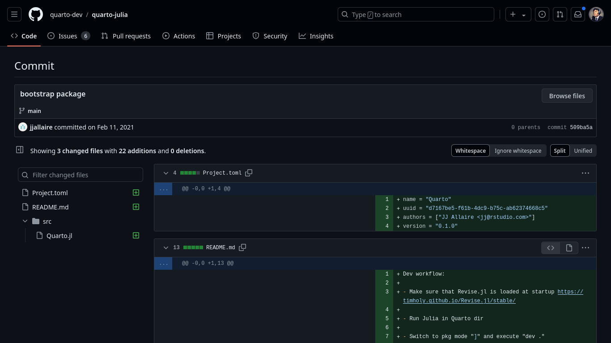

Quarto en la Era Digital

By: Diego Saavedra & Gabriel Gaona
Introducción

- Herramienta de publicación de código abierto.
- Permite integrar texto, código y visualizaciones.
- Ideal para crear documentos reproducibles y dinámicos.
Historia 
- Desarrollo iniciado en 2022.
- Creado por RStudio.
- Diseñado para ser compatible con múltiples lenguajes de programación.
Carácteristicas Principales
- Integración con lenguajes como R, Python, Julia y Observable.
- Capacidad de crear múltiples tipos de documentos: informes, artículos, presentaciones y libros.
- Soporte para Markdown y Jupyter Notebooks.
Uso de Quarto en la Educación.
Quarto para Educadores.
- Facilita la enseñanza de código de manera visual y atractiva.
- Permite la creación de libros interactivos y personalizados.
- Ideal para cursos en línea y materiales didácticos.
Ejemplo de Proyecto Educativo
- Descripción del proyecto que estás llevando a cabo.
- Objetivos y resultados esperados.
- Beneficios de usar Quarto en el ámbito educativo.0
Instalación de Quarto
Uso de Quarto en RStudio y VSCode
Uso de Quarto en Creación de Ebooks Virtuales
- Formatos soportados: PDF, EPUB, HTML
- Integraciòn de còdigo y visualizaciones interactivas.
- Personalizaciòn de estilos y plantillas
Publicaciòn y Distribución.
- Mejora en la presentaciòn y distribuciòn de contenido
- Mayor interactividad y Personalización
- Ideal para autores, investigadores y educadores.
Próximos Pasos
- practicar con Quarto en proyectos pequeños.
- Explorar màs funcionalidades y opciones avanzadas.
- Compartir tus creaciones con la comunidad.